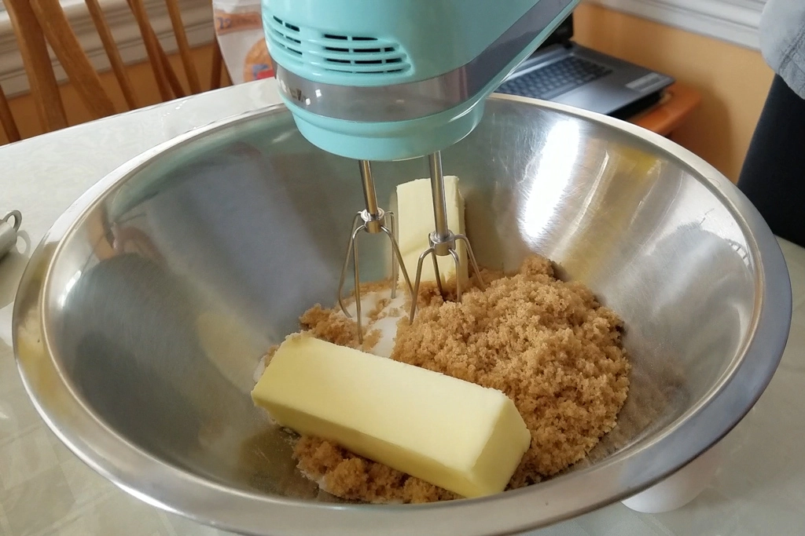
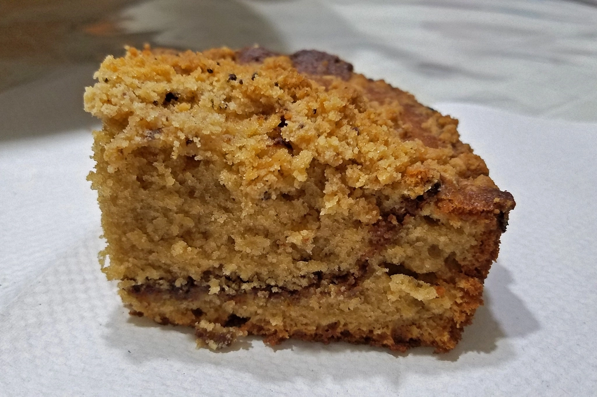
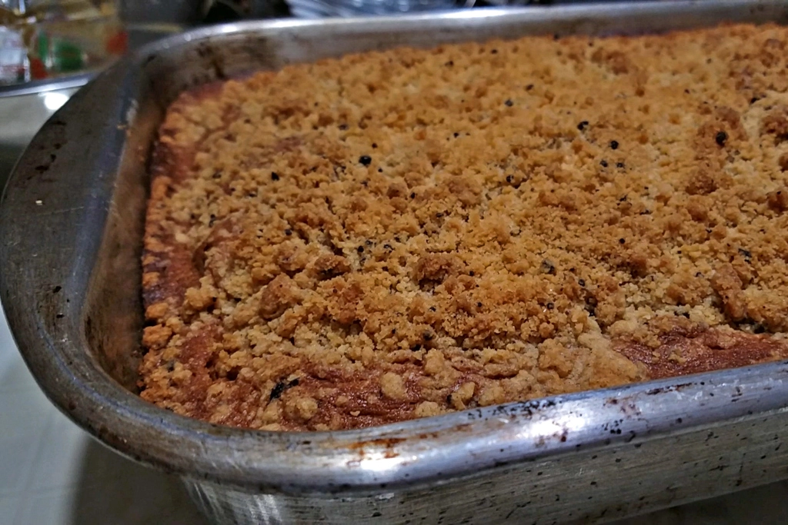

Making Coffee Cake from Dessert Person
Dec 10 - Written by Emily
After successfully making one recipe from Dessert Person and having many more recipes tagged for the future, it was clear what needed to be done.
With a love for both coffee and cake, Claire’s recipe for Coffee Coffee Cake was the ideal recipe to try out next after successfully making her Pistachio Pinwheels. What could possibly go wrong with a cake that has a crumbly top and cinnamon coffee center?
The long list of ingredients and steps looked a bit intimidating at first glance but since everything was broken up into each aspect of the cake, it was a fairly easy recipe to follow. The most satisfying part about making this cake is assembling all the different layers and then seeing how they come out after baking. It definitely made having to use so many bowls worth it.
Though there are many steps to making this cake, each step is fairly simple and if you have a stand mixer, the entire cake can come together much faster than it did for me with a hand mixer. It’s definitely still doable even if you don’t have either but since the cake gets a lot of its lift from creaming together the butter, sugars, and oil, I’d recommend investing in some form of mixer if you intend to make this recipe.
Tastewise, I’d give this recipe a 7 out of 10. I really enjoyed the cake and how light and flavorful it was, but I didn’t quite like the topping. It may just be human error in making the topping, but I found that it was a bit too crumbly and didn’t hold together very well. I also have never had ground cardamom before and so putting it in this cake was a whole new experience and something I will adjust for when I make any recipe that calls for this ingredient. The cardamom was only in the topping and I found that it was a bit too overpowering in flavor and since the topping was already my least favorite part of this cake, this overpowering flavor just made it worse.
As for the cake, my batter ratio was either a bit off or the coffee ribbon sunk a bit in the oven because my layers were definitely not even but that was okay because it still tasted good. Overall, I think this cake was very good and definitely worth making again with a few minor adjustments.
